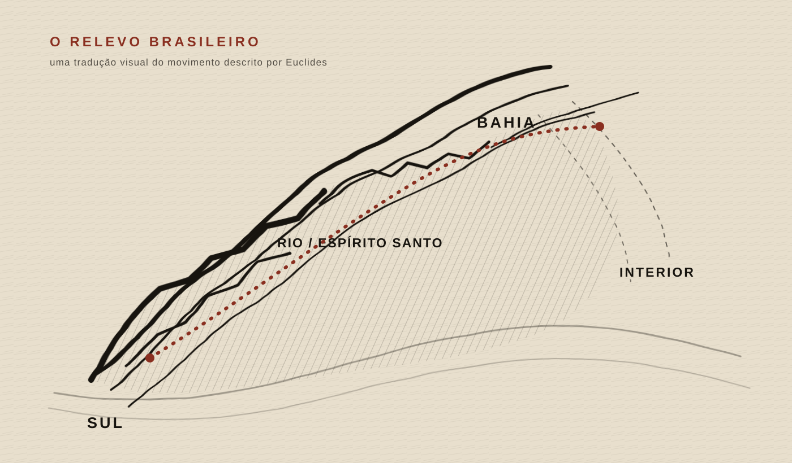
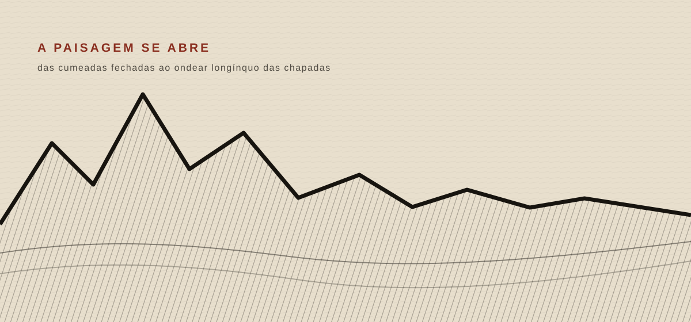
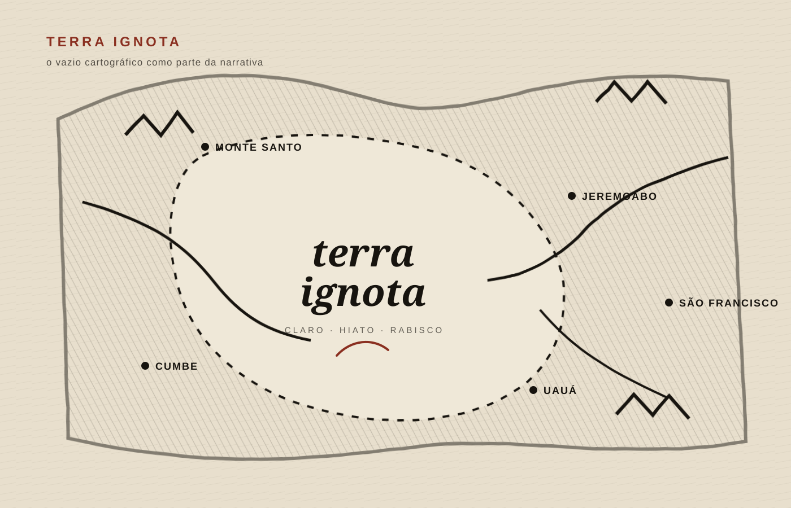

001 · O RELEVO BRASILEIRO
O país como relevo
Euclides começa longe de Canudos. Antes de narrar a guerra, ele pede que o leitor enxergue o Brasil como uma massa de terra que muda de forma do Sul à Bahia.
O planalto central do Brasil desce, nos litorais do Sul, em escarpas inteiriças, altas e abruptas. Assoberba os mares; e desata-se em chapadões nivelados pelos visos das cordilheiras marítimas, distendidas do Rio Grande a Minas.

De sorte que quem o contorna, seguindo para o norte, observa notáveis mudanças de relevos: a princípio o traço contínuo e dominante das montanhas; depois, entre o Rio de Janeiro e o Espírito Santo, um aparelho litoral revolto, feito da envergadura desarticulada das serras.
Em seguida, transposto o 15º paralelo, a atenuação de todos os acidentes — serranias que se arredondam e suavizam as linhas dos taludes — até que, em plena faixa costeira da Bahia, o olhar se dilata em cheio para o ocidente.

…mergulhando no âmago da terra amplíssima lentamente emergindo num ondear longínquo de chapadas.
O que queremos que o leitor perceba: a Bahia não aparece como ponto de chegada. Aparece como abertura. A partir daqui, o olhar de Euclides começa a abandonar o litoral e a entrar no interior.
009 · TERRA IGNOTA
No centro do mapa, um branco
Agora o território se aproxima. E quanto mais se aproxima, menos o mapa sabe dizer.
Abordando-o, compreende-se que até hoje escasseiam sobre tão grande trato de território notícias exatas ou pormenorizadas.
As nossas melhores cartas, enfeixando informes escassos, lá têm um claro expressivo, um hiato, terra ignota, em que se aventura o rabisco de um rio problemático ou idealização de uma corda de serras.

Transpondo o Itapicuru, pelo lado do sul, as mais avançadas turmas de povoadores estacaram em vilarejos minúsculos — Maçacará, Cumbe ou Bom Conselho — entre os quais o decaído Monte Santo tem visos de cidade.
Apenas naquele último rumo se avantajou uma vila secular, Jeremoabo, balizando o máximo esforço de penetração em tais lugares evitados sempre pelas vagas humanas, que vinham do litoral baiano procurando o interior.
“Nenhuma lá se fixou. Não se podia fixar.”
O que queremos que o leitor sinta: antes de Canudos ser um lugar histórico, ele pertence a uma região que o próprio mapa trata como ausência.
FIM DO PILOTO
O livro continua.
O visual só entra quando o texto pede.
Mapa quando é preciso se localizar. Paisagem quando é preciso imaginar. Planta quando é preciso reconhecer. Documento quando é preciso provar.